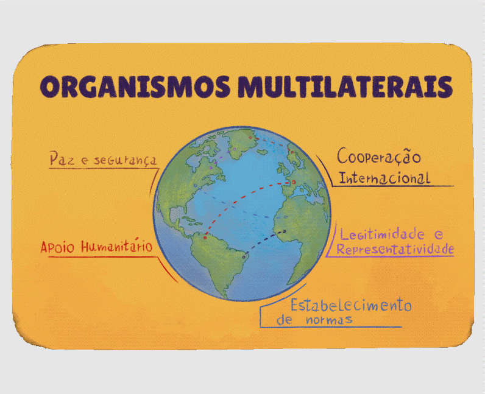

Organismos multilaterais
Os organismos multilaterais são entidades formadas por três ou mais países, que têm como objetivo a cooperação em questões de interesse comum, como segurança, desenvolvimento econômico, saúde, educação e direitos humanos. Embora questionados quanto aos seus objetivos e sua eficácia, desempenham um papel crucial na governança global, facilitando diálogos e ações conjuntas entre nações.
Os organismos multilaterais deveriam – idealmente – proporcionar e fortalecer:
- A cooperação internacional: promoção da colaboração entre países para enfrentar desafios globais, como mudanças climáticas, pandemias e conflitos, permitindo uma abordagem mais coordenada;
- A legitimidade e representatividade: garantia do espaço para que diferentes países, independentemente do nível de desenvolvimento, possam expressar suas preocupações e influenciar decisões globais;
- O estabelecimento de normas: contribuição para criar e disseminar normas e padrões internacionais em diversas áreas, como direitos humanos, trabalho e meio ambiente;
- O apoio humanitário: facilitação da assistência humanitária em crises, mobilizando recursos e coordenação entre países e organizações;
- A promoção da paz e da segurança: contribuição para a manutenção da paz e segurança internacional, mediando conflitos e promovendo a diplomacia.

Título: Organismos multilaterais
Fonte: Prosa (2025e).
O principal organismo multilateral é a, criada em 24 de outubro de 1945, após o término da Segunda Guerra Mundial, com o objetivo de promover a paz e a segurança internacional, além de fomentar a cooperação entre as nações. Ao final do texto, traremos mais informações sobre as instâncias e organismos que integram a ONU. Além da ONU, existem organismos multilaterais regionais ou de blocos de países, como o Mercado Comum do Sul (MERCOSUL), a Organização dos Estados Americanos (OEA), o Banco Interamericano de Desenvolvimento (BID), a Organização para a Cooperação e Desenvolvimento Econômico (OCDE), a Organização da Unidade Africana (OUA), a Organização dos Países Exportadores de Petróleo (OPEP), o Bloco Brasil, Rússia, Índia, China e África do Sul (BRICS) e o Novo Banco de Desenvolvimento (NBD), entre outros. Existem também grupos informais, como os G7 e G20, que reúnem os países com as maiores economias do mundo.
Embora com limites e dificuldades, é inegável a contribuição das agências da ONU na difusão de princípios e práticas democráticas e inclusivas, dos direitos humanos e sociais, a partir da Declaração dos Direitos do Homem e do Cidadão. Ações da OMS durante a pandemia de covid-19, os e o apoio às pessoas refugiadas por catástrofes e guerras são exemplos positivos da cooperação internacional.
Entretanto, muitas vezes os organismos multilaterais são criticados por sua burocracia excessiva, que pode atrasar a tomada de decisões e a implementação de ações, tornando-os pouco eficientes. A desigualdade de poder é preocupante, com os países mais poderosos econômica e militarmente dominando ou impedindo as decisões e, dessa forma, marginalizando as vozes dos países em desenvolvimento. Deste modo, os interesses nacionais dos países “centrais” prevalecem sobre os objetivos coletivos, comprometendo a eficácia das ações multilaterais.
Outra dimensão criticada é a de que as organizações, em alguns casos, não são responsabilizadas por suas falhas ao não cumprirem suas promessas ou por seus resultados insatisfatórios, o que muitas vezes decorre das dificuldades em implementar acordos, pois depende da vontade política dos Estados-membros, que nem sempre estão alinhados, a exemplo do Protocolo de Quioto sobre as mudanças climáticas.
Influência dos organismos multilaterais na Educação Básica e Profissional
Os organismos multilaterais influenciam as políticas educacionais no Brasil de diversas formas, refletindo suas diretrizes e recomendações nas legislações e políticas públicas educacionais. Nos anos 1990 e na primeira metade dos anos 2000, estes organismos foram “caixa de ressonância” de políticas educacionais de caráter neoliberal implantadas (ou pelo menos planejadas) nos “países centrais”. As preocupações sobre a eficácia e a adequação das políticas educacionais promovidas por estes organismos não são infundadas. Destacam-se, entre outras:
.png)
.png)
.png)
.png)
.png)
.png)
.png)
.png)
Título: Influência dos organismos multilaterais na Educação Básica e Profissional
Fonte: Schüler (2024).
Elaboração: Prosa (2025f).
A influência na elaboração de políticas públicas educacionais aparece não apenas no financiamento condicionado, mas na formação de servidores públicos enquanto agentes multiplicadores das diretrizes internacionais, do material instrucional e das consultorias e na promoção de gestores “parceiros”. Sob o argumento de garantir a qualidade da educação e a inclusão social, a regulação transnacional, promovida por organismos multilaterais, estabeleceu um marco para as políticas educacionais no Brasil, expresso na promoção de reformas educacionais que buscam alinhar as práticas brasileiras às exigências globais.
A adoção de modelos de educação que priorizam a eficiência econômica, a qualidade não socialmente referenciada e a responsabilização punitiva da escola e dos docentes reflete a agenda neoliberal que inspirou tais reformas. Um exemplo desse processo é a incorporação de novas tecnologias na educação numa perspectiva mercantil, em vez de uma abordagem que priorize a democratização do acesso à informação, a formação docente e uma educação crítica.
Nos anos 1990, a Educação Profissional no Brasil não era uma prioridade política de Estado, apresentando uma estrutura fragmentada. Essa fragmentação se manifestava em duas principais vertentes: os cursos técnicos de nível médio e tecnológicos, sob a responsabilidade do Ministério da Educação (MEC), e os cursos de qualificação de curta duração, vinculados ao Ministério do Trabalho e Emprego (MTE). Além disso, também havia uma série de iniciativas menores em diversos ministérios. Essa divisão aprofundava a pré-existente dualidade na oferta educacional, refletindo a separação entre a educação das camadas dirigentes e a educação dos trabalhadores. Assim, o MEC e o MTE operavam como se fossem duas "sub-redes" distintas para atender às classes trabalhadoras.
A política do MEC, expressa no Programa de Expansão da Educação Profissional (PROEP), caracterizava-se pelo enfraquecimento da rede federal e pela adoção de uma abordagem multilateral que separava a Educação Básica e a Profissional, dificultando a continuidade dos estudos em nível superior. Em contrapartida, as iniciativas do MTE, que faziam parte do Plano Nacional de Qualificação do Trabalhador (PLANFOR), muitas vezes ofereciam qualificações de curta duração que atendiam mais aos interesses dos provedores de cursos do que às necessidades do mercado ou dos trabalhadores, resultando em baixa efetividade social. Ou seja, em vez de promover articulação e complementaridade, observava-se uma fragmentação entre a escolarização – mesmo que limitada ao Ensino Médio – proporcionada pelos cursos técnicos e a qualificação profissional superficial.
Bilhões de reais foram investidos sem que houvesse um aumento consistente e sustentável na escolaridade e na qualificação da população economicamente ativa. Nesse contexto, o chamado(SENAI, SENAC, SENAT, SENAR, SESCOOP, SEBRAE) atuava predominantemente em benefício dos interesses corporativos dos setores empresariais, sem vincular-se a um projeto de desenvolvimento nacional mais abrangente, apesar de ser financiado com recursos públicos oriundos da seguridade social. Além disso, no Brasil, diversas entidades empresariais, fundações e institutos atuam na educação, incluindo a Educação Profissional, sendo a maioria alinhada com a perspectiva neoliberal.
Nos próximos capítulos, iremos aprofundar o debate sobre as influências desses organismos e a adoção de conceitos, noções, objetivos e perspectivas – aspectos que definem uma política pública. Torna-se necessário, portanto, a compreensão e superação do legado neoliberal nas políticas públicas, sobretudo as educacionais.
Para refletir: políticas públicas de EPT
Por enquanto, como exercício de reflexão para o Memorial, pesquise sobre as antinomias a seguir e analise-as:
- Políticas garantidoras de direitos ou políticas compensatórias?
- Políticas de caráter universal ou políticas com foco em determinado público?
- Políticas de formação para o mundo do trabalho ou políticas de formação exclusivamente para o mercado de trabalho?
- Políticas de trabalho, emprego e renda enquanto direito e dever do Estado ou a adoção da premissa da “empregabilidade” como responsabilidade do trabalhador e escolha do mercado?
- Formação para elevar a qualificação geral do trabalhador ou formação para a aquisição de competências estritamente laborais?
- Formação para o trabalho decente ou formação para o trabalho precário?
- Redes solidárias de produção e consumo ou empreendedorismo individual?
Com base nas suas respostas às perguntas anteriores, reflita sobre sua vivência sobre o tema a partir das questões a seguir:
- Dentre as políticas públicas de EPT que você vivenciou, quais dos termos das antinomias você consegue localizar? Todas estão no mesmo arcabouço conceitual?
- Nos documentos das políticas públicas de EPT que você conhece, há a menção ou referência a organismos internacionais? E nacionais? Quais? Você consegue identificar os interesses desses organismos?
Atualmente, a ONU apresenta instâncias de decisão e é composta por agências especializadas.
Instâncias de decisão
- Assembleia Geral: composta por todos os 193 países-membros, é o principal fórum de discussão onde são debatidos temas internacionais e tomadas decisões sobre questões globais.
- Conselho de Segurança: ao qual se atribui a responsabilidade de manter a paz e a segurança internacionais. É composto por 15 membros, sendo cinco permanentes com poder de veto (Estados Unidos, Rússia, China, França e Reino Unido) e dez rotativos, eleitos pela Assembleia Geral.
- Secretariado: é responsável pela administração da ONU, é liderado pelo Secretário-Geral, que atua como porta-voz da organização e coordena as atividades diárias.
- Conselho Econômico e Social (ECOSOC): sua atribuição é facilitar a cooperação econômica e social entre os países-membros e coordenar o trabalho das agências especializadas.
- Corte Internacional de Justiça: é o principal órgão judicial da ONU, que resolve disputas legais entre estados e dá pareceres sobre questões jurídicas internacionais.
Agências Especializadas Sociais
- UNESCO (Organização das Nações Unidas para a Educação, a Ciência e a Cultura);
- OIT (Organização Internacional do Trabalho);
- UNICEF (Fundo das Nações Unidas para a Infância);
- OMS (Organização Mundial da Saúde);
- FAO (Organização das Nações Unidas para a Alimentação e a Agricultura);
- UNFCCC (Convenção-Quadro das Nações Unidas sobre Mudança do Clima);
- PNUD (Programa das Nações Unidas para o Desenvolvimento);
- UNFPA (Fundo de População das Nações Unidas);
- ONU Mulheres.
Agências Especializadas Financeiras
- Banco Mundial – Banco Internacional para Reconstrução e Desenvolvimento (BIRD) e a Associação Internacional de Desenvolvimento (IDA);
- FMI (Fundo Monetário Internacional).
Outras Agências Especializadas
- ACNUR (Alto Comissariado das Nações Unidas para Refugiados);
- OMI (Organização Marítima Internacional);
- OMM (Organização Meteorológica Mundial);
- UIT (União Internacional de Telecomunicações);
- OMPI (Organização Mundial da Propriedade Intelectual);
- AIEA (Agência Internacional de Energia Atômica);
- OACI (Organização Internacional de Aviação Civil);
- OMT (Organização Mundial do Turismo);
- OPAQ (Organização para a Proibição de Armas Químicas).
Observação: embora não seja agência da ONU, a Organização Mundial do Comércio (OMC) colabora com a mesma em questões comerciais e econômicas.